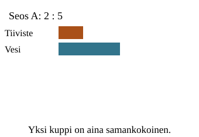
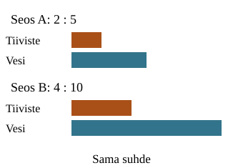
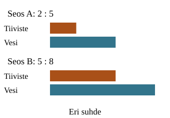

<link rel="stylesheet" href="lesson.css"><section data-core>
<section id="resepti-malli" data-teaching-step="1" data-lesson-role="teaching-step">
<h2>Sama sekoitus?</h2><p class="lead">Aavan resepti: 2 kuppia tiivistettä ja 5 vettä. Loikka tekee isomman annoksen. Säilyykö suhde?</p><div data-audience-columns><div data-visual-column><button type="button" data-step disabled>Näytä seuraava vaihe</button><div data-image></div><p data-readout>Aavan resepti: vertaa tiivistettä veteen, tässä järjestyksessä.</p>
</div><div data-response-column><h3>Vertaa reseptejä</h3><p>Näytä vertailun molemmat reseptit painikkeella ”Näytä seuraava vaihe”. Vertaa sitten tiivistettä veteen.</p><div class="tools"><button type="button" data-judge="same" disabled>Sama suhde</button><button type="button" data-judge="different" disabled>Eri suhde</button></div><p data-judgement class="feedback" aria-live="polite">Vertaa määriä ennen päätöstä.</p><details data-lesson-role="worked-example"><summary>Toista tai vaihda esimerkki</summary><label>Esimerkki<select data-model disabled><option value="double">Kaksinkertainen</option><option value="add">Kolme lisää kumpaakin</option><option value="reduce">Pienempi resepti</option></select></label><div class="tools"><button type="button" data-play disabled>Toista vaiheet</button><button type="button" data-stop disabled>Pysäytä</button></div></details></div></div>
</section>


<noscript data-lesson-role="metadata"><p>JavaScript ei ole käytössä. Mallin alku ja ratkaistut esimerkit näkyvät. Vuorovaikutus on pois käytöstä; voit tehdä tehtävät paperilla.</p></noscript>
<section data-teaching-step="3" data-lesson-role="teaching-step">
<details data-lesson-role="answer"><summary>Miksi nämä ovat samaa suhdetta?</summary><p>Aavalla on 2 kuppia tiivistettä ja 5 kuppia vettä. Loikalla on 4 ja 10. Kumpaakin on kaksinkertaisesti: 2 : 5 = 4 : 10. Yhtäsuuruus koskee suhteita, ei kokonaismääriä. Tällaista kahden suhteen yhtäsuuruutta sanotaan verrannoksi.</p><figure data-lesson-role="worked-example"><figcaption>Tiiviste suhteessa veteen — sama järjestys kummallakin puolella.</figcaption></figure><p>Suhteen arvon voi kirjoittaa osamääränä: 2/5 = 4/10. Myös ristiintulot ovat samat: 2 × 10 = 5 × 4. Tämä tarkistaa samanarvoisuuden, ei korvaa selitystä siitä, mitä määrät tarkoittavat.</p></details>
</section>

<section data-teaching-step="4-example" data-lesson-role="worked-example">
<details data-lesson-role="teaching-step"><summary>Entä kolme kuppia lisää kumpaakin?</summary><p>2 + 3 = 5 ja 5 + 3 = 8. Suhde 5 : 8 ei ole sama kuin 2 : 5. Tiivisteen määrä muuttui 2,5-kertaiseksi ja veden vain 1,6-kertaiseksi. Kertoimet ovat eri.</p><figure data-lesson-role="worked-example"><figcaption>Sama lisäys ei tässä säilytä sekoitussuhdetta.</figcaption></figure><p>Yleinen tarkistus a/b = c/d on a × d = b × c, kun nimittäjät eivät ole nollia. Tiivisteen osuus koko seoksesta on ensimmäisessä reseptissä 2/7. Tiivisteen suhde veteen on 2/5.</p></details></section><section data-teaching-step="4-practice" data-lesson-role="question"><h3>Kokeile itse</h3><p>Voit vastata suoraan. Mallin tai vihjeen käyttö on sallittua harjoittelua.</p><label>Tehtävä<select data-task disabled><option value="missing">Suurenna</option><option value="reduce">Pienennä</option><option value="transfer">Eri resepti</option><option value="half">Puolita</option></select></label><p data-prompt>2 : 5 = 6 : □. Mikä luku tulee ruutuun?</p><label>Vastaus<input data-answer type="text" inputmode="text" placeholder="esim. 7/3 tai 1,25" autocomplete="off" maxlength="128" disabled></label><button type="button" data-check disabled>Tarkista</button><p class="feedback" data-feedback aria-live="polite">Tarkista, kun olet valmis.</p><details data-lesson-role="hint"><summary>Tarvitsen vihjeen</summary><p>Vertaa saman aineen määriä. Millä kerroit tai jaoit ensimmäisen määrän? Tee toiselle aineelle sama muutos samalla kertoimella. Pidä aineiden järjestys samana.</p></details>
</section>

<section data-teaching-step="5" data-lesson-role="teaching-step">
<details data-lesson-role="teaching-step"><summary>Vielä pohdittavaa</summary><p>Mitä tapahtuu suhteelle 1 : 1, jos kumpaankin määrään lisätään 3? Suhde säilyy. Siksi sama lisäys ei muuta jokaista suhdetta — esimerkin 2 : 5 kohdalla se muuttaa.</p></details>
</section>
<details data-lesson-role="teacher-note"><summary>Opettajalle ja paperille</summary><p>Tavoite: tunnistaa verranto kahden samanarvoisen suhteen yhtäsuuruudeksi. Puuttuvan jäsenen löytäminen on sovellus, ei lupaus yleisestä yhtälönratkaisutaidosta. Luvut ovat saman mittaisia kuppeja. Kuva vertaa aineiden määriä, eikä simuloi todellista makua, väriä tai kemiaa.</p><p>Ennuste ennen päätelmää: onko isompi kokonaismäärä automaattisesti vahvempaa seosta? Paperilla piirrä kaksi määräpalkkia, suurenna molemmat samalla kertoimella ja kokeile sitten samaa lisäystä. Siirrä ajatus maaliin: 3 osaa keltaista ja 2 sinistä; 8 sinistä vaatii 12 keltaista. Värin tarkkaa havaittavaa sävyä ei luvata.</p><p>Poistumiskysymys: muodosta eri luvuilla toinen suhde, joka on yhtä suuri kuin 3 : 4, ja perustele. Hyväksy myös pienentäminen ja murtoluvut. Ristiintulo ilman oikeita suureita ei osoita tilanteen tulkintaa.</p><p>Mallin ja palautteen käyttö on tuettua harjoittelua. Tässä ei tallenneta henkilöhistoriaa, myönnetä muodollista hallintaa tai päätellä viivästettyä muistamista.</p></details></section>
